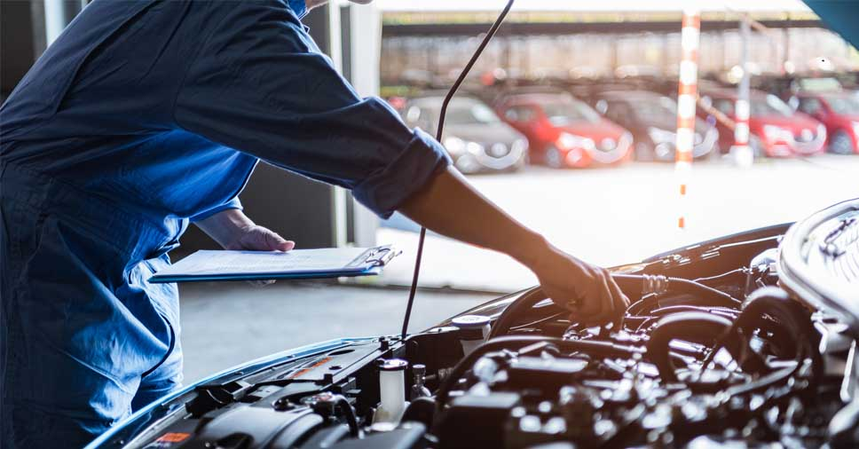
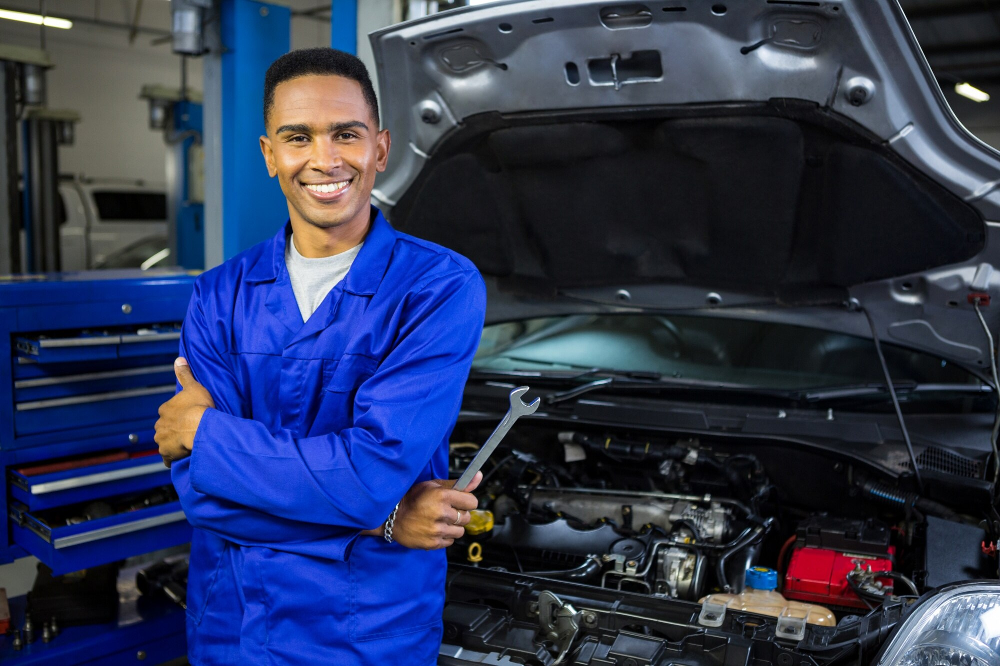
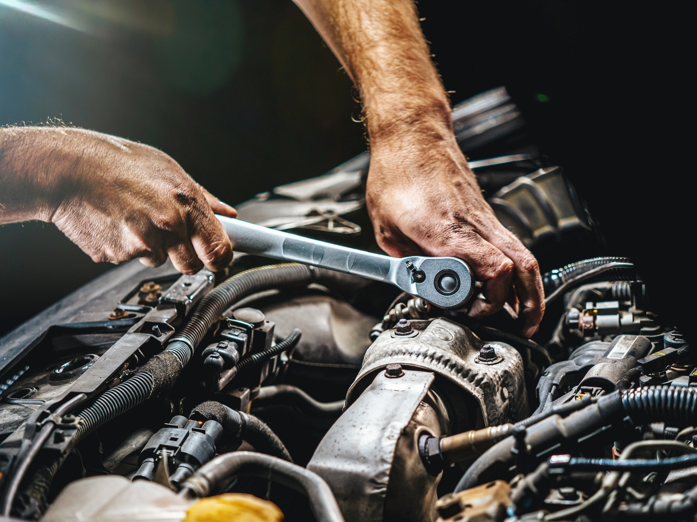
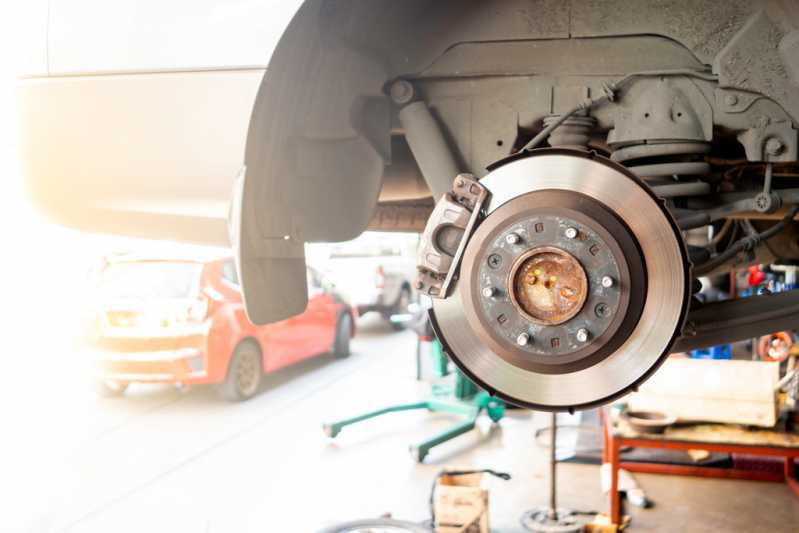
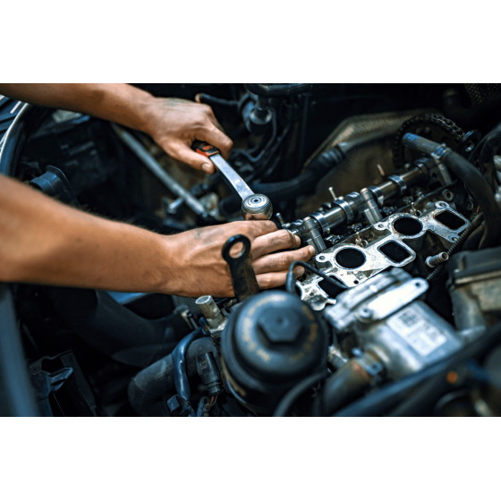
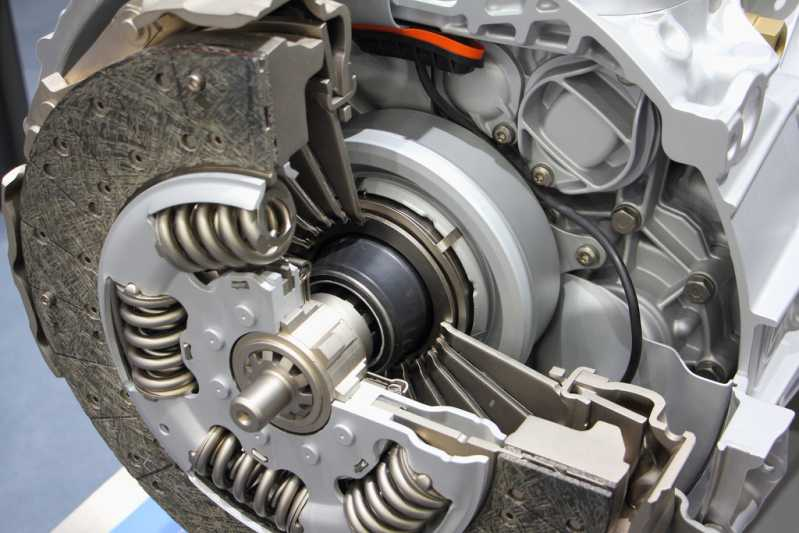

REVISÃO
A revisão mecânica é um processo fundamental para garantir o desempenho e a longevidade de veículos. Mais do que um procedimento de rotina, ela exige uma combinação de conhecimento técnico profundo, ferramentas precisas e um olhar atento para a prevenção. Apresento aqui as habilidades que desenvolvi para realizar revisões completas e eficazes.
O trabalho é executado por técnicas profissionais e qualificadas dais quias nececitam o seu veículo, pronto para diagnosticar e resolver qualquer questão, desde a manutenção preventiva mais simples até os reparos mais complexos.

PROCESSOS DA REVISÃO.

DIAGNÓSTICO E ANÁLISE TÉCNICA
Abordagem sistemática para avaliar cada componente, começando pela inspeção visual e auditiva. Em seguida, aplica-se ferramentas de alta precisão, como scanners e multímetros, para obter dados concretos. Essa metodologia permite identificar não apenas problemas evidentes, mas também potenciais pontos de falha que podem comprometer a operação no futuro.
PROCESSOS DE DIAGNÓSTICO E ANÁLISE TÉCNICA

PREVENÇÃO E CORREÇÃO
Com base no diagnóstico, executa-se os planos de manutenção. Na manutenção preventiva, me dedi-case à substituição programada de peças e fluidos (ex: troca de óleo, filtros, correia dentada, etc.), conforme as diretrizes do fabricante. Na manutenção corretiva, atua-se de forma ágil e eficiente para reparar ou substituir componentes d anificados, sempre garantindo a utilização de peças de qualidade e o ajuste correto, como o torquímetro.
PROCESSOS DE MANUTENÇÃO PREVENTIVA E CORRETIVA

QUALIFICAÇÃO E AGILIDADE
Além das habilidades técnicas, considero a organização e a atenção aos detalhes como diferenciais. Mantenho minhas ferramentas organizadas e o ambiente de trabalho limpo, o que contribui para um serviço mais rápido e seguro. A constante atualização sobre novas tecnologias e procedimentos do setor é uma prioridade, garantindo que meu trabalho esteja sempre alinhado às melhores práticas do mercado.
PROCESSOS DE QUALIFICAÇÃO E AGILIDADE

SUSPENSÃO
A manutenção do sistema de suspensão de um veículo exige um conjunto de habilidades mecânicas essenciais para garantir não apenas o conforto, mas, sobretudo, a segurança do motorista e dos passageiros. A atenção aos detalhes garante que o serviço seja feito de forma correta e segura, prolongando a vida útil do veículo.
PROCESSOS DE SUSPENSÃO

FREIOS
Realiza-se uma avaliação completa do sistema de freio, identificando desgaste das sapatas e lonas, condições do tambor e o estado geral dos componentes. Consigo identificar rapidamente problemas como frenagem irregular, ruídos anormais ou ineficiência do sistema, aplicando as correções adequadas.
PROCESSOS DE FREIOS

TROCA DE ÓLEO
Utiliza-se a ferramenta correta para remover o bujão do cárter sem danificar a rosca, garantindo que o óleo usado seja completamente drenado. O olho treinado do mecânico analisa o lubrificante que escorre, buscando sinais de contaminação por partículas metálicas, que indicam problemas mais sérios no motor. A retirada do filtro de óleo velho e a limpeza cuidadosa da área de vedação são passos essenciais, que evitam futuros vazamentos
PROCESSOS DE TROCA DE ÓLEO

MOTOR
Capacidade de identificar falhas mecânicas e eletrônicas utilizando equipamentos modernos (scanners) e inspeção detalhada, assegurando a solução eficaz dos problemas. Comandos como o torque correto de um parafuso, o manuseio de peças delicadas e a montagem minuciosa de componentes internos dependem de uma alta precisão manual. A atenção minuciosa aos detalhes garante que nenhum passo seja negligenciado, evitando retrabalhos e problemas futuros.
PROCESSOS DE MOTOR

EMBREAGEM
Identificação de falhas, como patinação, trepidação e dificuldade de engate de marchas. Análise de componentes como disco, platô e rolamento para determinar o nível de desgaste e a necessidade de substituição. Realização da troca do kit de embreagem (disco, platô e rolamento), com foco na qualidade e no alinhamento correto dos componentes para garantir um funcionamento suave e eficaz. Realização de ajustes e regulagens para otimizar o desempenho do sistema e prolongar a vida útil do conjunto.